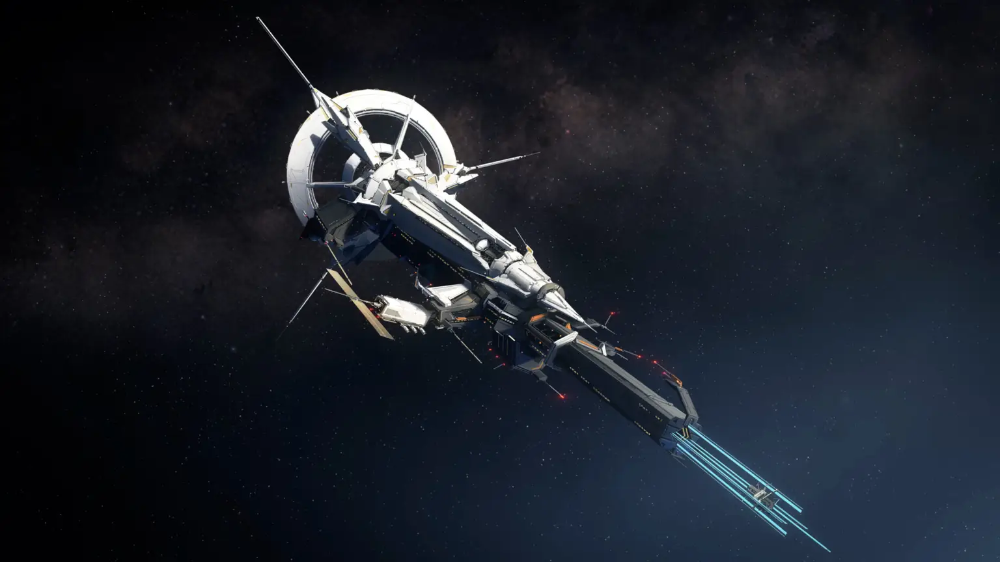
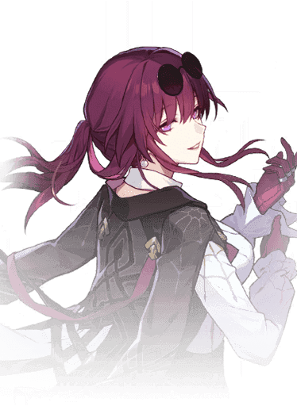
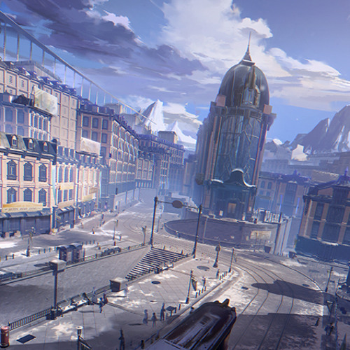
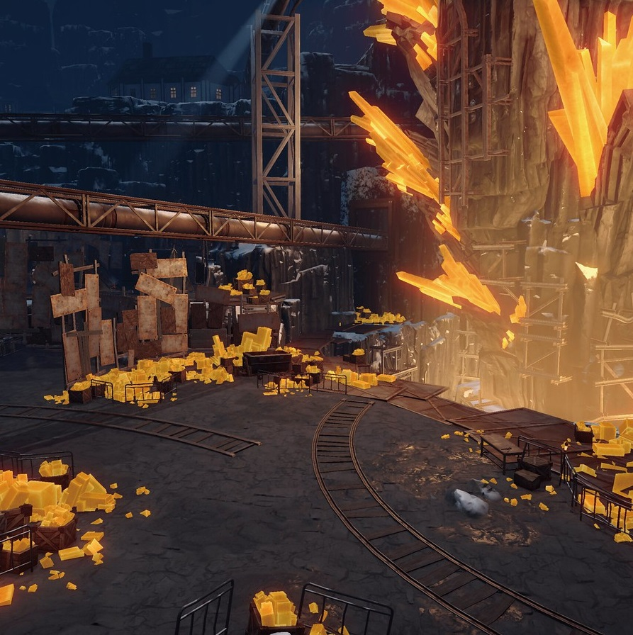

Argumento Inicial
La historia sigue a un grupo de aventureros que viajan a bordo del Expreso Astral, un tren espacial que Himeko Murata encontró durante su niñez en su planeta natal. Himeko reparó el tren años más tarde, iniciando así su viaje hacia las estrellas. Sin embargo, pronto se percató que necesitaría muchos más compañeros para conseguir su objetivo.
Primeras impresiones

la aventura arranca en la estación espacial Herta, un lugar futurista repleto de todo tipo de artilugios de alta tecnología. Este lugar, propiedad de la Sra. Herta, de la sociedad Genius, fue concebido en un principio para albergar todo tipo de cosas, conocidas como Curiosidades. Pero, con el paso del tiempo, se convirtió en un centro de investigación científica dirigido por seguidores de Herta. En este lugar, conocerán a Kafka, una elegante señorita que te dio un toque de atención al inyectarte un stellaron cuando la legión Antimateria estaba desatando el caos. Kafka es una cazadora stellaron Cazadora que vive la vida al límite. Ella es intrigante y misteriosa a la vez, pero sin duda es alguien con quien no se debe jugar. No sabemos mucho sobre ella, solo que es un pez gordo entre los cazadores stellaron y que está en la mira de un montón de organizaciones, y no con las mejores intenciones.

Arco Jarilo-VI
Al comenzar la travesía, la tripulación y ustedes se dirigirán a Jarilo-VI, un planeta cubierto de nieve, secretos y peligros que acechan bajo la gélida superficie. La Nevada Eterna eliminó casi todo rastro de vida aquí, pero en este entorno implacable, la última defensa de la humanidad, la ciudad de Belobog, permanece firme frente al hielo atenazador. La ciudad se divide en dos: el Supramundo y el Bajomundo. El Supramundo rebosa de vida y paz, con estufas que mantienen a raya el frío. Por otra parte, el Bajomundo es la desolación más pura, repleta de ruinas dispersas. Mientras recorren Jarilo-VI, podrían encontrarse con gente de personalidades únicas que pueden convertirse en camaradas. Bronya es una de ellas. Como heredera de la Guardia Suprema, a Bronya le enseñaron que el bienestar de los habitantes de Bajomundo debería sacrificarse para mantener viva la civilización de Belobog. Pero a Bronya siempre ha sido escéptica en cuanto a eso. Inesperadamente, ella se une al grupo y termina en Bajomundo.


Belobog
Hace casi un milenio, el Frío Eterno vendió la civilización humana en el tiempo. Mientras los vientos arrolladores y las tormentas heladas barrían el mundo en un color plata pálido, sólo Belobog sobrevivió gracias a las bendiciones de un Protector. Aún sufriendo dentro del viento y la nieve, la humanidad avanza.